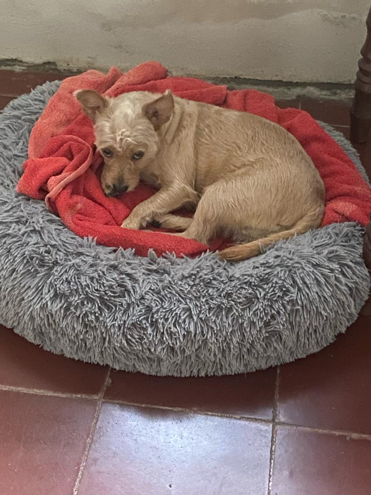

Elaborado por Marcos Sánchez
19 de marzo de 2024
Mi nombre es Marcos, tengo 22 años y soy estudiante de 4to año de Ingeniería en Sistemas. Crecí en Yalí, Jinotega, en una casa con muchas personas
Tengo intereses bastante comunes, como:
- Fútbol: solía practicar este deporte de pequeño, me gusta mucho verlo. Soy aficionado del Real Madrid
- Anime: Me agradan la mayoría de géneros, me importa más la calidad de la historia que se cuenta que otra cosa. Adopté este gusto gracias a mi hermano mayor }
- Videojuegos: Me gustan mucho los juegos de nintendo, siempre he sido fan de Pokemon, llegando a jugar de forma competitiva un tiempo
- Gimnasio: Adopté el hábito de hacer ejercicio hace un año. Al principio me costaba mucho y lo hacía de manera forzada, pero ahora forma parte de mi día
Esta es la última adición a mi familia, es mi perrita, Fiona, quien es muy leal, cariñosa e inteligente
